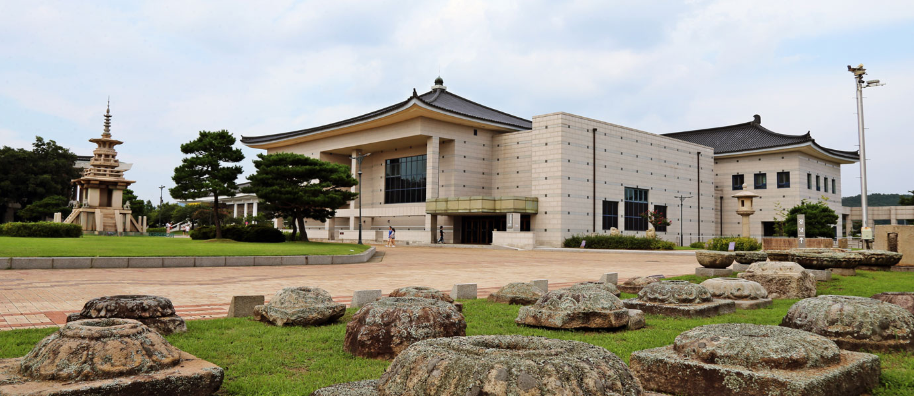
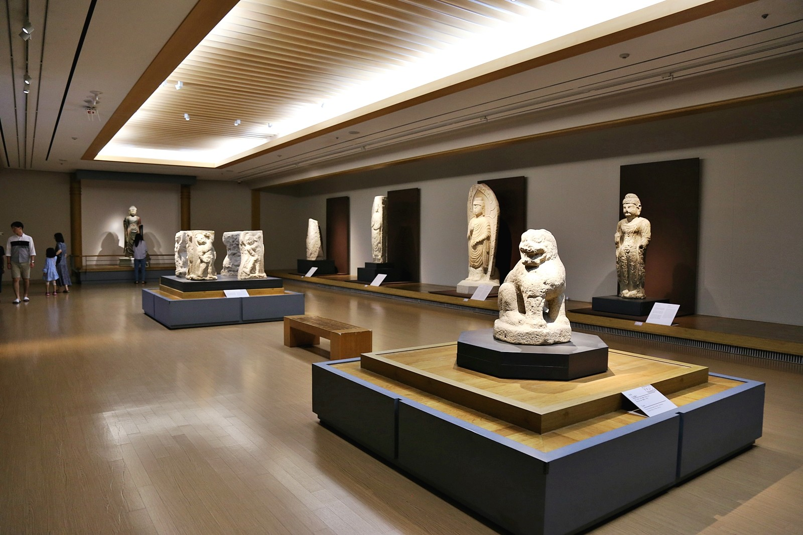
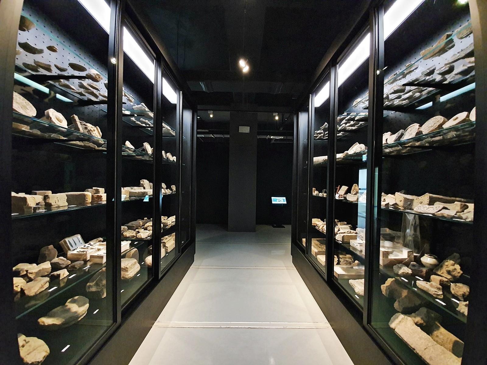

경주여행핵심코스

- 경주여행
- 여행코스추천
- 경주여행핵심코스


경주 시내권 핵심 바이블
- 경주 시내권 핵심 바이블
- 팔방미인 보문관광단지 여행
- 경주의 세계문화유네스코를 찾아서
- 신라 이후 천년경주
- 유휴(You 休)!경주 바다에 머물다
여행코스설명
#시내권핵심코스 #느긋한코스 #시내권도보여행 #시내권자전거여행
당일치기 여행, 혹은 짧은 1박2일 여행을 계획하고 있는 이들에게 추천한다. 반경 3킬로미터 이내에 모든 여행지가 모여 있다. 느긋하게 쉬어가며 도보여행하거나, 경주의 정취를 만끽하며 자전거여행하기 안성맞춤인 코스. 경주를 더 보고 싶은 욕심이 생긴다면, 이 시내권 핵심바이블 코스에 불국사나 보문단지권 여행 스팟을 한 두 곳 추가해도 좋다.
코스제안
1일차
- 1국립경주박물관
- 2월정교
- 3첨성대
- 4대릉원
- 5동궁과 월지
2일차
- 1월성발굴현장
- 2황리단길
- 
/slide2.jpg)
- 
- 
국립경주박물관
#국립경주박물관#신라역사#국보급유물관람#아이와함께#실내데이트
- 주소경상북도 경주시 일정로 186, 국립경주박물관 (인왕동)
- 전화번호054-740-7500
- 홈페이지https://gyeongju.museum.go.kr/
- 관람시간매일 10:00 - 18:00 / 일요일, 공휴일 10:00 - 19:00
- 야간연장개관10:00 - 21:00 ( 매월 마지막 주 수요일, 3~12월 매주 토요일 )
- 정기휴관일1월 1일, 설날, 추석
- 관람료무료
- 주차정보전용 주차장(무료)이용
- 상세정보
- 길찾기 및 주변정보
- 사진/영상
- 리뷰
국립경주박물관에서는 압축된 신라 천년의 역사를 살펴볼 수 있다.
경주 여행을 할 때에 첫 번째 행선지로 들러 미리 공부한 뒤 곳곳의 문화유산을 만나면 알찬 여행이 될 것이다.
박물관은 대표전시관인 신라역사관을 비롯해 신라미술관, 월지관 등의 상설전시관 3관과 기획전시가 열리는 특별전시관으로 크게 구성된다.
신라역사관에는 신라의 건국부터 멸망까지 일련의 역사를 4실로 나누어 전시했다.
수준 높은 신라 불교 미술에 대해 알아보고 싶다면 신라미술관으로 향하자.
월지관은 동궁과월지의 발굴조사를 토대로 출토 유물을 정리해둔 전시관이다.
동궁과 월지 복원모형을 비롯해 월지에서 출토된 나무배, 금동판삼존불좌상과 같은 귀한 유물을 만날 수 있다.
상설전시관 세 곳에서는 정해진 시간마다 전시해설 프로그램을 운영 중이니 박물관 관람 전 시간표를 확인하고 해설을 들으며 전시관 관람을 하는 것도 좋은 방법이다.
국립전시관에서 놓치지 말아야 할 포인트 하나가 더 있다.
국보급 문화재가 박물관 마당에 있다.
야외전시장을 둘러보며 성덕대왕 신종과 고선사지삼층석탑 등 귀한 유물을 챙겨 보자.
국립경주박물관 바로 옆에 올해(2019) 5월, 영남권 수장고가 문을 열었다.
이곳은 영남지역에서 발굴한 매장문화재 60여만 점을 체계적으로 보관하고자 건립한 수장고이다.
신라 토기와 기와 등 주요 유적 출토품 3,000여점을 전시한 전시수장고와 문화재발굴과 보존, 복원 등에 대해 알아볼 수 있는 로비전시실을 관람할 수 있다.
경주 여행을 할 때에 첫 번째 행선지로 들러 미리 공부한 뒤 곳곳의 문화유산을 만나면 알찬 여행이 될 것이다.
박물관은 대표전시관인 신라역사관을 비롯해 신라미술관, 월지관 등의 상설전시관 3관과 기획전시가 열리는 특별전시관으로 크게 구성된다.
신라역사관에는 신라의 건국부터 멸망까지 일련의 역사를 4실로 나누어 전시했다.
수준 높은 신라 불교 미술에 대해 알아보고 싶다면 신라미술관으로 향하자.
월지관은 동궁과월지의 발굴조사를 토대로 출토 유물을 정리해둔 전시관이다.
동궁과 월지 복원모형을 비롯해 월지에서 출토된 나무배, 금동판삼존불좌상과 같은 귀한 유물을 만날 수 있다.
상설전시관 세 곳에서는 정해진 시간마다 전시해설 프로그램을 운영 중이니 박물관 관람 전 시간표를 확인하고 해설을 들으며 전시관 관람을 하는 것도 좋은 방법이다.
국립전시관에서 놓치지 말아야 할 포인트 하나가 더 있다.
국보급 문화재가 박물관 마당에 있다.
야외전시장을 둘러보며 성덕대왕 신종과 고선사지삼층석탑 등 귀한 유물을 챙겨 보자.
국립경주박물관 바로 옆에 올해(2019) 5월, 영남권 수장고가 문을 열었다.
이곳은 영남지역에서 발굴한 매장문화재 60여만 점을 체계적으로 보관하고자 건립한 수장고이다.
신라 토기와 기와 등 주요 유적 출토품 3,000여점을 전시한 전시수장고와 문화재발굴과 보존, 복원 등에 대해 알아볼 수 있는 로비전시실을 관람할 수 있다.